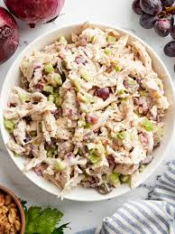

Chicken Salad (Traditional)

It's a salad but its better in every way!
Featuring most of the major players of a chicken sandwich, this dish aims to please.
Ingredients
- 1 rotisserie chicken, about 4 cups of meat
- 1 cup seedless red grapes, quartered
- 1 cup red onion, diced
- 1 cup celery, diced
- 1/4 cup chopped walnuts
- 3/4 cup mayonnaise
- 1 Tbsp white vinegar
- 1 tsp salt
- 1 tsp freshly cracked black pepper
Steps
- Remove all white and dark meat from one rotisserie chicken. This will yield about 4 cups of meat. Shred meat with 2 forks and set aside.
- Gather the quartered grapes, diced red onion, diced celery, and chopped walnuts.
- In a small mixing bowl, add the mayonnaise, white vinegar, salt and pepper.
- Whisk all dressing ingredients to combine.
- Pour dressing ingredients over the shredded chicken, grapes, celery and walnuts.
- Toss all ingredients together until evenly coated. Enjoy on a sandwich or on top of lettuce greens for a filling salad.